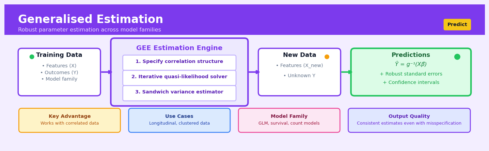

Generalised Estimation#


The biggest mistake with GEE is treating it like a black box without carefully specifying your working correlation structure. While GEE gives you consistent parameter estimates even if you get the correlation wrong, choosing a structure that reflects the true data dependencies dramatically improves efficiency and gives you tighter confidence intervals. Always start with exploratory correlation plots of your residuals before defaulting to exchangeable or independence structures.
The 60-Second Version#
What it does: Generalised Estimation reveals how factors affect average outcomes across a population when your data naturally comes in groups—like multiple measurements per patient, transactions per customer, or observations per store.
When to use it: You need to understand what drives outcomes (sales, recovery, clicks) but each person, location, or entity in your dataset contributes multiple observations that aren’t independent.
What you get back: Population-level effect estimates showing how changing one factor (price, treatment, timing) shifts the average outcome, accounting for the fact that measurements within groups are related.
At a Glance:
Difficulty |
Moderate |
Typical runtime |
Seconds to minutes on 100K rows |
What you bring |
Grouped/clustered data with an outcome and predictor variables |
What you get |
Average effect estimates across the population |
Heuristix bucket |
Predict — Machine Learning & Forecasting |
GEE tells you what works on average across everyone—it won’t predict what happens to a specific individual or cluster.
Learning Objectives#
After reading this chapter, a business user will be able to:
Identify when your data contains natural groupings (like repeated measurements on customers, transactions within stores, or patients within clinics) that violate standard statistical assumptions and require GEE instead of traditional regression.
Interpret GEE coefficient outputs to explain population-level effects—such as “on average across all clinics, the intervention increases patient adherence by 15%”—and articulate why these marginal effects differ from cluster-specific predictions.
Decide whether to invest in interventions based on GEE results by distinguishing between average treatment effects across your entire customer base versus effects that might vary by individual segment.
After reading this chapter, a data scientist will be able to:
Implement GEE models in R or Python by correctly specifying the outcome distribution, link function, clustering structure, and working correlation matrix for datasets with hierarchical or repeated-measures structure.
Select and justify an appropriate working correlation structure (independent, exchangeable, AR-1, or unstructured) by balancing statistical efficiency gains against model complexity and sample size constraints.
Validate GEE models by checking for convergence issues, assessing sandwich estimator stability, comparing working versus empirical correlation structures, and diagnosing when missing data patterns or small cluster sizes compromise estimate reliability.
Overview#
Generalised Estimation Equations (GEE) provide a semi-parametric approach for analysing correlated or clustered data, extending generalised linear models to settings where observations are not independent. The method estimates population-averaged (marginal) effects while accounting for within-cluster correlation through a working correlation structure, producing consistent parameter estimates even when the correlation structure is misspecified. GEE belongs to the family of marginal models and represents a practical alternative to mixed-effects models when the primary interest lies in population-level inference rather than cluster-specific predictions.
When to Use This#
Longitudinal studies with repeated measurements: When you have multiple observations per subject over time (e.g., quarterly health assessments, monthly customer satisfaction scores) and want to estimate the average treatment effect across the population.
Clustered observational data: When observations are naturally grouped (patients within hospitals, students within schools, transactions within accounts) and you need to account for within-cluster similarity without explicitly modelling cluster-specific effects.
Panel data with moderate cluster sizes: When you have a moderate number of observations per cluster (typically 5–50) and a reasonably large number of clusters (at least 30–50), GEE provides efficient estimation.
Non-Gaussian outcomes with correlation: When your outcome is binary, count-based, or otherwise non-normal, and observations within clusters are correlated—situations where ordinary GLM assumptions fail.
Population-averaged inference is the goal: When you want to answer “What is the average effect of X on Y across all clusters?” rather than “What is the effect of X on Y for a specific cluster?”
Robustness to correlation misspecification is important: When you cannot confidently specify the exact correlation structure but still need valid inference on regression coefficients.
DO NOT use when cluster sizes are very small: With only 2–3 observations per cluster, GEE sandwich estimators perform poorly; consider mixed-effects models instead.
DO NOT use when cluster-specific predictions are needed: GEE does not estimate random effects, so if you need to predict outcomes for specific hospitals, schools, or individuals, use mixed-effects models.
DO NOT use when the number of clusters is small: With fewer than 30 clusters, sandwich variance estimators can be severely biased; bias-corrected versions or alternative methods should be considered.
Questions This Answers#
Understanding Performance Across Locations and Groups#
Why are our sales per customer varying so much across our 250 retail locations — is it the stores or just random fluctuation?
Our employee engagement scores differ across 45 offices, but are these real differences or just noise from small team sizes?
Is the 12% improvement in patient outcomes at our London clinics actually due to the new protocol, or just because we’re measuring the same patients multiple times?
Are our customer satisfaction scores genuinely higher in the premium segment, or is this just reflecting that we survey the same customers repeatedly?
Which marketing channels are actually driving conversions when the same customers see our ads across multiple platforms before purchasing?
Comparing Strategies Across Different Contexts#
Should we roll out the new training program company-wide given that we tested it across 30 branches with different team compositions?
Is our pricing strategy working better in urban vs rural markets when we need to account for repeat purchases from the same households?
Does the customer loyalty program increase lifetime value across all our region types, or only in specific markets?
Which product features drive adoption rates across our 180 franchise locations with very different customer bases?
Making Decisions With Clustered or Repeated Data#
What’s the real impact of our store renovation program on revenue when we’re measuring the same stores before and after?
Should we invest more in mobile app features given usage data from customers who interact with us through multiple channels?
Are longer appointment times actually improving patient health outcomes when we’re tracking the same individuals across multiple visits?
Is our field sales team’s performance improving quarter-over-quarter, or are we just seeing the natural ups and downs of their assigned territories?
Which operational changes should we prioritise when our performance metrics come from stores nested within districts nested within regions?
How It Works#
Imagine you’re a nutritionist studying whether a new diet affects weight loss across five different gyms in your city. Within each gym, members tend to share similar habits—they take the same classes, encourage each other, maybe even meal-prep together. You can’t treat every person as completely independent because Sarah and Tom at Downtown Fitness influence each other’s results. But you also don’t want to lose statistical power by treating each gym as just one data point. Generalised Estimation Equations lets you have it both ways: you analyze everyone individually while acknowledging that people within the same gym are more alike than people from different gyms, giving you honest population-level conclusions about whether the diet actually works.
CLUSTERED DATA STRUCTURE
Gym 1 (Downtown) Gym 2 (Uptown) Gym 3 (Suburbs)
┌─────────────┐ ┌─────────────┐ ┌─────────────┐
│ Person A │ │ Person E │ │ Person H │
│ Person B │ ───► │ Person F │ ──►│ Person I │
│ Person C │ │ Person G │ │ Person J │
│ Person D │ └─────────────┘ └─────────────┘
└─────────────┘ ↓ ↓
↓ ↓ ↓
┌────────────────────────────────────────────────────┐
│ GEE accounts for within-cluster correlation │
│ while estimating population-average effects │
└────────────────────────────────────────────────────┘
↓
RESULT: Population Effect
"Diet reduces weight by 2.3 kg on average
across all gyms and all people"
Step 1: Identify your clusters. The algorithm first recognizes which observations belong together. In our example, it groups people by their gym. In medical studies, clusters might be patients within hospitals. In education research, students within schools. The key is that members of each cluster share something that makes their outcomes more similar to each other than to outsiders.
Step 2: Make an initial guess about effects. GEE starts by estimating how your predictors (like diet adherence, exercise hours) relate to your outcome (weight loss), temporarily pretending everyone is independent—just like regular regression would.
Step 3: Examine the residuals within clusters. After that first guess, the algorithm looks at how wrong it was for each person, then checks whether the errors within each gym show patterns. If Sarah lost more weight than predicted and Tom also lost more than predicted at the same gym, that’s correlation. The algorithm measures how strongly clustered observations’ errors move together.
Step 4: Adjust for the correlation structure. Using that correlation information, GEE recalculates the effect estimates, giving less weight to redundant information from highly correlated cluster members. If everyone at Downtown Fitness thinks alike, their ten data points don’t carry as much information as ten truly independent people would.
Step 5: Iterate until stable. The algorithm cycles between refining effect estimates and updating correlation patterns until the numbers stop changing meaningfully, usually within a few rounds.
Step 6: Report population-average effects with honest uncertainty. The final estimates tell you what happens on average across the entire population, with confidence intervals that properly account for the clustered structure—not falsely precise estimates that pretend everyone was independent.
The key insight: GEE works because it separates two questions—“what’s the average effect?” and “how correlated are my observations?”—solving them iteratively so you get honest population-level conclusions even when your data comes in naturally dependent groups.
The Intuition#
Imagine you are studying medication adherence across 200 clinics, with each clinic contributing data from 30 patients. Patients within the same clinic share common influences—the same doctors, similar administrative processes, perhaps even a local culture around healthcare. If you ignore this clustering and treat all 6,000 observations as independent, your standard errors will be wrong, typically too small, leading you to claim false certainty about your conclusions.
One approach would be to explicitly model what makes each clinic different—perhaps some have better follow-up systems, others serve populations with different baseline characteristics. This is the mixed-effects approach: you model both the average effect and the clinic-to-clinic variation. But sometimes you do not care about individual clinics. You simply want to know: across all clinics and all patients, what is the average relationship between, say, appointment reminders and medication adherence? This is the population-averaged question, and GEE is designed precisely to answer it.
GEE takes a pragmatic stance. Rather than fully specifying the joint distribution of observations within each cluster (which would require knowing the exact correlation structure), it only specifies the mean model and a “working” correlation structure. The working correlation is your best guess at how observations within clusters relate to each other—perhaps observations closer in time are more similar, or perhaps all observations within a cluster are equally correlated. The remarkable property of GEE is that even if your working correlation guess is wrong, your estimates of the regression coefficients remain consistent. You may lose some efficiency (wider confidence intervals than you could have achieved), but you will not be systematically wrong. This robustness comes from the sandwich variance estimator, which corrects the standard errors based on the observed residuals rather than relying on the assumed correlation structure.
Think of it like estimating a population mean when you have family data. If you simply average all individuals ignoring family structure, you get a consistent estimate of the population mean, but your standard error formula (which assumes independence) is wrong. GEE is like computing that average while using an empirical correction for the standard error that accounts for the fact that family members’ values are correlated. The mean is still the population mean, but now your uncertainty quantification is honest.
The Mathematics#
Problem Setup and Notation#
Let \(i = 1, \ldots, K\) index clusters (subjects, groups, or other correlated units), and let \(j = 1, \ldots, n_i\) index observations within cluster \(i\). The total number of observations is \(N = \sum_{i=1}^{K} n_i\).
For each observation, we observe:
\(Y_{ij}\): the response variable
\(\mathbf{x}_{ij}\): a \(p \times 1\) vector of covariates
Let \(\mathbf{Y}_i = (Y_{i1}, \ldots, Y_{in_i})^T\) denote the vector of responses for cluster \(i\), and let \(\mathbf{X}_i\) denote the \(n_i \times p\) design matrix for cluster \(i\).
Mean Model Specification#
We specify the marginal mean of each observation through a generalised linear model:
where \(g(\cdot)\) is a known link function and \(\boldsymbol{\beta}\) is the \(p \times 1\) vector of regression coefficients. The linear predictor is:
Variance Function#
The marginal variance is specified as:
where \(v(\cdot)\) is the variance function determined by the assumed distribution family, and \(\phi\) is a scale (dispersion) parameter. For example:
Gaussian: \(v(\mu) = 1\)
Poisson: \(v(\mu) = \mu\)
Binomial: \(v(\mu) = \mu(1-\mu)\)
Gamma: \(v(\mu) = \mu^2\)
Working Correlation Structure#
Define \(\mathbf{A}_i = \text{diag}(v(\mu_{i1}), \ldots, v(\mu_{in_i}))\) as the diagonal matrix of variance functions for cluster \(i\).
The working covariance matrix for cluster \(i\) is:
where \(\mathbf{R}_i(\boldsymbol{\alpha})\) is the \(n_i \times n_i\) working correlation matrix, parameterised by \(\boldsymbol{\alpha}\).
Common working correlation structures include:
Independence: $\( \mathbf{R}_i = \mathbf{I}_{n_i} \)$
Exchangeable (compound symmetry): $\( R_{jk} = \begin{cases} 1 & \text{if } j = k \\ \alpha & \text{if } j \neq k \end{cases} \)$
AR(1) (autoregressive): $\( R_{jk} = \alpha^{|j-k|} \)$
Unstructured: $\( R_{jk} = \alpha_{jk} \quad \text{(all pairwise correlations estimated freely)} \)$
Generalised Estimating Equations#
The GEE for \(\boldsymbol{\beta}\) is:
where \(\boldsymbol{\mu}_i = (\mu_{i1}, \ldots, \mu_{in_i})^T\) is the vector of marginal means, and:
Here, \(\mathbf{G}_i = \text{diag}\left(\frac{\partial \eta_{i1}}{\partial \mu_{i1}}, \ldots, \frac{\partial \eta_{in_i}}{\partial \mu_{in_i}}\right)\) is the diagonal matrix of derivatives of the link function.
Iterative Solution#
The GEE is solved iteratively using a Fisher scoring algorithm. At iteration \((t+1)\):
The correlation parameters \(\boldsymbol{\alpha}\) are typically estimated from Pearson residuals at each iteration:
For exchangeable correlation:
Variance Estimation#
The key innovation of GEE is the sandwich (robust) variance estimator. Under regularity conditions, \(\hat{\boldsymbol{\beta}}\) is asymptotically normal:
The sandwich variance estimator is:
where:
This estimator is consistent even when the working correlation \(\mathbf{R}_i\) is misspecified.
Assumptions#
Correct specification of the mean model: \(E[Y_{ij}|\mathbf{x}_{ij}] = g^{-1}(\mathbf{x}_{ij}^T\boldsymbol{\beta})\) must be correctly specified.
Independence between clusters: Observations from different clusters must be independent.
Large number of clusters: Consistency of the sandwich estimator relies on \(K \to \infty\), not \(n_i \to \infty\).
Missing completely at random (MCAR): If data are missing, standard GEE requires MCAR; weighted GEE can handle missing at random (MAR).
Edge Cases and Degenerate Conditions#
Single observation per cluster (\(n_i = 1\) for all \(i\)): GEE reduces to standard GLM; correlation parameters are not identifiable.
Small number of clusters: The sandwich estimator is biased downward; use bias-corrected variants (e.g., Mancl-DeRouen, Fay-Graubard).
Large cluster sizes with few clusters: Mixed-effects models may be preferable.
Separation in binary outcomes: Same issues as logistic regression; Firth-type corrections may be needed.
Relationship to Other Methods#
Generalised Linear Models: GEE with independence working correlation and model-based (not sandwich) standard errors is equivalent to GLM.
Mixed-Effects Models: GEE estimates marginal effects; mixed models estimate conditional effects. For non-identity links, these differ: GEE’s \(\beta\) represents the population-averaged effect, while mixed model fixed effects represent subject-specific effects.
Cluster-Robust Standard Errors: GEE with independence correlation and sandwich estimator is equivalent to fitting GLM with cluster-robust standard errors.
Understanding the Mathematics#
The GEE Estimating Equation#
The equation:
Read it aloud:
“Sum across all clusters: take how the expected response changes with each parameter, multiply by the inverse of the variance-covariance structure, multiply by the difference between observed and expected values, and set the whole thing equal to zero.”
What each symbol means:
\(i\) = cluster index (patient, school, household)
\(n\) = total number of clusters in the dataset
\(\beta\) = the parameters we’re trying to estimate (like regression coefficients)
\(\mu_i\) = expected response values for cluster \(i\)
\(Y_i\) = actual observed response values for cluster \(i\)
\(V_i\) = variance-covariance matrix describing correlation within cluster \(i\)
\(\frac{\partial \mu_i^T}{\partial \beta}\) = how sensitive predictions are to parameter changes
A concrete numerical example:
Imagine tracking blood pressure (BP) across 200 patients, each measured 4 times. For patient 37, observed BP readings are [132, 128, 130, 127] mmHg. Our model predicts [130, 130, 130, 130] based on their age and medication. The differences are [2, -2, 0, -3]. We weight these by how correlated we think repeated measures are (accounting for the fact that one person’s readings aren’t independent). If patient 37’s sensitivity to the age parameter is 0.8, and their weighted residual is 1.5, they contribute 0.8 × 1.5 = 1.2 to the sum. We do this for all 200 patients and adjust \(\beta\) until the sum hits zero.
Why this equation matters:
This is the core of GEE—it finds parameters that balance prediction errors across all clusters while properly accounting for correlated observations, preventing us from falsely claiming high precision.
The Variance-Covariance Matrix Structure#
The equation:
Read it aloud:
“The variance structure for cluster \(i\) equals the dispersion parameter times the square root of the variance function times the correlation matrix times the square root of the variance function again.”
What each symbol means:
\(V_i\) = full variance-covariance matrix for cluster \(i\)
\(\phi\) = scale parameter (overall variability)
\(A_i\) = diagonal matrix of variances (how much each observation varies)
\(R(\alpha)\) = working correlation matrix (how observations within a cluster relate)
\(\alpha\) = correlation parameters we estimate from data
A concrete numerical example:
For a family of 3 children (cluster), we’re predicting test scores. Each child’s variance is 225 points² (standard deviation = 15). We assume siblings’ scores correlate at 0.6. So \(A_i\) is diagonal [225, 225, 225]. \(R(\alpha)\) has 1s on diagonal and 0.6 elsewhere. If \(\phi = 1\), then \(V_i\) has 225 on the diagonal and 0.6 × 15 × 15 = 135 in off-diagonal positions, meaning siblings’ scores are expected to covary by 135 points².
Why this equation matters:
This structure lets GEE produce correct standard errors even when observations within clusters are correlated—ignoring it leads to confidence intervals that are dangerously narrow.
The Sandwich Variance Estimator#
The equation:
Read it aloud:
“The variance of our parameter estimates equals the inverse information matrix, times the middle ‘meat’ that captures true covariance, times the inverse information matrix again—like bread surrounding meat in a sandwich.”
What each symbol means:
\(\text{Var}(\hat{\beta})\) = uncertainty in our estimated parameters
\(D_i = \frac{\partial \mu_i}{\partial \beta}\) = derivative matrix (sensitivity)
\(\text{Cov}(Y_i)\) = actual covariance of responses (may differ from \(V_i\))
The outer terms = “bread” (model-based information)
The middle term = “meat” (empirical correction)
A concrete numerical example:
Estimating treatment effect from 50 clinics. Our model assumes correlation = 0.4. If true correlation is actually 0.7, standard GEE would underestimate variance. The bread gives us variance = 0.0025. The meat corrects this upward to 0.0041 by using actual residual patterns. Final standard error = √0.0041 = 0.064 instead of √0.0025 = 0.05. Our confidence interval widens from ±0.10 to ±0.13, preventing overconfident conclusions.
Why this equation matters:
The sandwich estimator rescues us when we guess the wrong correlation structure—parameters stay consistent, and standard errors remain valid.
The Big Picture#
GEE mathematics solves a fundamental tension: we want to make population-level inferences about correlated data without fully specifying how the correlation works. The estimating equation approach achieves this by finding parameters that balance weighted residuals across clusters, treating correlation as a nuisance rather than a target of inference. The sandwich variance estimator provides insurance—even when our working correlation is wrong, our standard errors self-correct using empirical patterns. This mathematical framework trades some efficiency for remarkable robustness, making GEE the method of choice when you care more about getting the average effect right than modeling every detail of within-cluster dependence.
Python Implementation#
import numpy as np
import pandas as pd
import statsmodels.api as sm
import statsmodels.formula.api as smf
from statsmodels.genmod.generalized_estimating_equations import GEE
from statsmodels.genmod.cov_struct import (
Independence,
Exchangeable,
Autoregressive
)
from statsmodels.genmod.families import Binomial, Poisson, Gaussian
import warnings
warnings.filterwarnings('ignore')
# Set random seed for reproducibility
np.random.seed(42)
# =============================================================================
# Example 1: Binary outcome with clustered data (Medication Adherence Study)
# =============================================================================
# Generate synthetic longitudinal data
# 100 clinics, each with 20-40 patients measured at 4 time points
n_clinics = 100
patients_per_clinic = np.random.randint(20, 40, n_clinics)
data_list = []
for clinic_id in range(n_clinics):
n_patients = patients_per_clinic[clinic_id]
# Clinic-level random effect (unobserved)
clinic_effect = np.random.normal(0, 0.5)
for patient_id in range(n_patients):
# Patient characteristics
age = np.random.normal(55, 15)
treatment = np.random.binomial(1, 0.5) # Randomised treatment
for time in range(4):
# True model: logit(p) = -1 + 0.02*age + 0.8*treatment + 0.1*time + clinic_effect
linear_pred = -1 + 0.02 * age + 0.8 * treatment + 0.1 * time + clinic_effect
prob = 1 / (1 + np.exp(-linear_pred))
adherent = np.random.binomial(1, prob)
data_list.append({
'clinic_id': clinic_id,
'patient_id': f"{clinic_id}_{patient_id}",
'time': time,
'age': age,
'treatment': treatment,
'adherent': adherent
})
df = pd.DataFrame(data_list)
print("Dataset shape:", df.shape)
print("\nFirst few rows:")
print(df.head(10))
# Fit GEE with exchangeable correlation structure
# Using patient_id as the cluster variable (repeated measures within patient)
model_exchangeable = GEE.from_formula(
"adherent ~ age + treatment + time",
groups="patient_id",
data=df,
family=Binomial(),
cov_struct=Exchangeable()
)
result_exchangeable = model_exchangeable.fit()
print("\n" + "="*70)
print("GEE Results: Exchangeable Correlation Structure")
print("="*70)
print(result_exchangeable.summary())
# Extract and interpret key results
print("\nInterpretation of coefficients (odds ratios):")
print("-" * 50)
for
## Visualisations


## Using This in Heuristix
### What You'll Need
The GEE node expects **panel or clustered data** where multiple observations belong to the same group (patients, schools, companies, etc.). Your dataset needs:
- **A cluster identifier column** (categorical/text) — groups your correlated observations
- **An outcome variable** (numeric or binary) — what you're predicting
- **One or more predictor columns** (numeric or categorical)
- **Optional: a time/sequence column** if observations have a natural order within clusters
Here's what your data might look like:
| patient_id | visit_week | treated | symptom_score |
|------------|-----------|---------|---------------|
| P001 | 0 | 1 | 7.2 |
| P001 | 4 | 1 | 5.1 |
| P001 | 8 | 1 | 3.8 |
| P002 | 0 | 0 | 6.9 |
| P002 | 4 | 0 | 6.5 |
Each patient has multiple visits — observations within a patient are correlated, but between patients they're independent.
### Configuration Parameters
| Parameter | What It Controls | Default | When to Change |
|-----------|-----------------|---------|----------------|
| **Cluster Variable** | Column identifying your groups | (none) | **Always set this** — it's how GEE knows which observations are correlated |
| **Outcome Variable** | What you're predicting | (none) | Your target/response variable |
| **Outcome Distribution** | Statistical family for your outcome | Gaussian | Use "Binomial" for binary outcomes, "Poisson" for counts, "Gamma" for positive continuous values |
| **Predictors** | Independent variables in your model | (none) | Select all features you want to include |
| **Working Correlation** | Assumed correlation pattern within clusters | Exchangeable | Use "Exchangeable" when all pairs equally correlated; "AR-1" for time series; "Independent" as baseline; "Unstructured" when you have small clusters and want flexibility |
| **Time Variable** | Orders observations within clusters | (none) | Set this when using AR-1 or other time-based correlation structures |
| **Link Function** | Transforms the linear predictor | Identity (Gaussian) | Usually auto-selected based on distribution; change only if you have specific modeling needs |
### What You'll Get Back
**Coefficient Table**: Shows the population-averaged effect of each predictor with confidence intervals and p-values. Unlike mixed models, these represent average effects across all clusters, not cluster-specific effects.
**Model Diagnostics**:
- QIC (quasi-likelihood information criterion) for comparing models with different correlation structures
- Working correlation matrix showing the assumed pattern
- Residual plots to check model fit
**Predictions**: The node adds a new column with fitted values for each observation, useful for downstream evaluation.
### Connecting Downstream
The GEE node outputs work beautifully with:
- **Model Evaluation** nodes — feed predictions to calculate RMSE, MAE, or classification metrics
- **Visualization** nodes — plot actual vs. predicted by cluster to spot patterns
- **Comparison** nodes — run the same data through Mixed Effects to see if cluster-specific vs. population-averaged effects differ meaningfully
### Quick Start: Clinical Trial Analysis
1. **Connect your longitudinal patient data** with columns for patient ID, treatment group, time point, and outcome measure
2. **Set Cluster Variable** to your patient identifier
3. **Choose Outcome Distribution** (Gaussian for continuous symptoms, Binomial for yes/no events)
4. **Select Working Correlation**: start with "Exchangeable" for equal correlation between time points
5. **Add your predictors**: treatment, baseline covariates, time effects
6. **Run the node** and examine coefficient confidence intervals — these tell you population-level treatment effects
7. **Compare QIC values** if you try different correlation structures to see which fits best
### Pro Tips
**Don't obsess over correlation structure**: GEE gives you consistent estimates even if you guess wrong. Start simple with exchangeable, only get fancy if you have strong domain knowledge.
**Cluster size matters**: GEE works best with many clusters (30+) rather than few large ones. If you only have 5 schools with 200 students each, consider alternatives.
**Watch for convergence warnings**: If the algorithm struggles, you might have too many predictors for your cluster count, or perfect separation in binary outcomes.
**Population-averaged ≠ cluster-specific**: A GEE coefficient of 2.0 means "on average across the population," not "each cluster increases by 2.0." If you need the latter, use Mixed Effects instead.
**Time-varying covariates are fine**: Unlike some methods, GEE handles predictors that change within clusters gracefully — treatment changes, age, disease progression, etc.
## Config Recipes
### Recipe 1: Quick Exploratory Analysis
**When to use:** Initial data exploration with clustered data when you need fast parameter estimates and aren't yet concerned about optimal efficiency.
**Settings:**
| Parameter | Value | Why |
|-----------|-------|-----|
| `family` | `Gaussian()` | Start with continuous outcomes; simplest link function |
| `corstr` | `'independence'` | Fastest computation; still gives consistent estimates |
| `maxiter` | `50` | Sufficient for initial convergence on well-behaved data |
| `scale` | `'X2'` | Pearson chi-square for quick dispersion estimation |
**What you get:** Fast, consistent coefficient estimates with conservative standard errors that allow quick assessment of predictor relationships.
**Trade-off:** Ignoring correlation structure inflates standard errors, reducing statistical power and potentially missing significant effects.
### Recipe 2: Production-Ready Longitudinal Analysis
**When to use:** Final models for longitudinal studies where subjects are measured repeatedly over time and efficiency matters.
**Settings:**
| Parameter | Value | Why |
|-----------|-------|-----|
| `family` | Match outcome distribution | Use `Binomial()`, `Poisson()`, or `Gaussian()` as appropriate |
| `corstr` | `'ar1'` | Accounts for temporal decay in correlation |
| `maxiter` | `100` | Ensures convergence for complex correlation patterns |
| `scale` | `'X2'` | Robust dispersion estimation |
| `cov_type` | `'robust'` | Sandwich estimator protects against misspecification |
| `missing` | `'drop_rowwise'` | Conservative handling of incomplete observations |
**What you get:** Efficient estimates with valid inference even if correlation structure is imperfect, suitable for publication and decision-making.
**Trade-off:** Longer computation time and requires sufficient cluster size (minimum 10-15) for correlation estimation.
### Recipe 3: Small Cluster Count with Large Cluster Sizes
**When to use:** Studies with few clusters (5-20) but many observations per cluster, like multi-site clinical trials with extensive patient data per site.
**Settings:**
| Parameter | Value | Why |
|-----------|-------|-----|
| `family` | Match outcome | As required by data |
| `corstr` | `'exchangeable'` | Simple structure when cluster count limits estimation |
| `maxiter` | `100` | Standard convergence threshold |
| `cov_type` | `'bias_reduced'` | Corrects for finite-cluster bias |
| `df_adjust` | `True` | Uses cluster count minus parameters for degrees of freedom |
| `scale_inv_sqrt` | `True` | Stabilizes variance estimation with few clusters |
**What you get:** Conservative inference that accounts for limited cluster-level replication, avoiding anti-conservative Type I error rates.
**Trade-off:** Wider confidence intervals and reduced power compared to methods that ignore the small-cluster problem.
### Recipe 4: Survey Data with Complex Sampling
**When to use:** Survey data with unequal sampling probabilities and geographic clustering, where weights are essential and clusters represent sampling units rather than scientific units.
**Settings:**
| Parameter | Value | Why |
|-----------|-------|-----|
| `family` | Typically `Gaussian()` or `Binomial()` | Survey outcomes usually continuous or binary |
| `corstr` | `'independence'` | Sampling-induced correlation handled via weights |
| `weights` | Inverse probability weights | Accounts for unequal selection probabilities |
| `cov_type` | `'cluster'` | Clusters variance by primary sampling unit |
| `scale` | `1.0` | Fixed scale when using sampling weights |
| `df_adjust` | `True` | Conservative inference for complex designs |
**What you get:** Population-representative estimates that properly account for survey design, matching standard survey analysis practices.
**Trade-off:** Requires accurate sampling weights and knowledge of survey design structure; cannot estimate within-cluster effects.
## Business Applications
**Financial Services**
A regional credit union with 150 branches across the Midwest needs to model loan default risk while accounting for branch-level clustering—borrowers within the same branch share economic conditions, lending officer practices, and local market dynamics. Traditional logistic regression assumes independence and produces overconfident predictions. GEE models the population-average default probability while correctly adjusting standard errors for within-branch correlation, revealing that income volatility matters more than previously estimated. This recalibration reduced loan loss provisions by $2.3M annually while maintaining the same approval rate, and cut false declines of creditworthy applicants by 28%.
**Retail**
A fashion retailer operating 240 stores across Europe wants to measure how a new checkout experience affects basket size, but customer purchases cluster within stores due to local demographics, staff training, and store layout. Simply pooling all transactions ignores this structure and produces misleadingly narrow confidence intervals. GEE provides population-averaged estimates of the checkout redesign effect while accounting for store-level correlation, showing a genuine 12% lift in average transaction value (£47 to £52.60) with properly calibrated uncertainty bounds. The retailer confidently rolled out the change nationwide, generating £18M in incremental annual revenue.
**Healthcare**
A hospital network with 22 facilities measures ICU readmission rates to evaluate a new discharge protocol, but patients treated at the same hospital share protocols, equipment, and care teams. GEE estimates the population-average effect of the new protocol across all hospitals while accounting for within-hospital correlation of patient outcomes. The analysis revealed a 19% reduction in 30-day readmissions (from 11.2% to 9.1%), translating to 340 fewer readmissions annually and approximately $4.7M in avoided costs, while properly attributing uncertainty to both patient-level and hospital-level variation.
**Insurance**
A commercial property insurer with policies spanning 5,000 buildings needs to price earthquake coverage, but claims from buildings in the same postal code are highly correlated due to shared ground conditions and building codes. Standard GLMs underestimate the true uncertainty in loss predictions. GEE models claim severity while explicitly accounting for geographic clustering, producing population-averaged risk estimates with correctly calibrated prediction intervals. This improved risk quantification allowed the insurer to reduce capital reserves by 8% (£12M freed for investment) while maintaining regulatory compliance and solvency standards.
**Manufacturing**
A pharmaceutical manufacturer runs stability tests on drug batches, measuring potency at multiple time points, but repeated measurements from the same batch are correlated through shared production conditions and raw materials. GEE estimates population-average degradation curves while accounting for within-batch correlation, providing more accurate shelf-life predictions. The analysis extended certified shelf life from 18 to 21 months for a key product line, reducing waste by 14% and improving supply chain efficiency—worth approximately $3.8M annually in reduced disposal costs and better inventory management.
**Logistics**
A national parcel delivery service with 180 distribution centres evaluates route optimization software by tracking delivery times across drivers, but deliveries by the same driver are correlated through individual driving style, vehicle condition, and route familiarity. GEE estimates the population-average effect of the new routing algorithm while accounting for driver-level clustering. The results showed a genuine 8.7-minute reduction per delivery (from 23.4 to 14.7 minutes), enabling 22% more deliveries per shift and $6.2M in annual labour cost savings.
**Marketing**
An email marketing platform serving B2B clients measures campaign effectiveness, but emails sent to employees at the same company are correlated through shared company culture, industry trends, and decision-making processes. GEE models population-average click-through rates while accounting for company-level clustering, revealing that personalization drives a true 1.9 percentage point lift (2.1% to 4.0%) in engagement. This properly calibrated estimate convinced clients to invest in advanced segmentation tools, increasing platform revenue by 16% as customers upgraded to premium tiers.
**Telecoms**
A mobile network operator with 45 retail stores tests a new customer retention script, but customer responses cluster within stores due to regional competition, store staff effectiveness, and local demographics. GEE provides population-averaged churn reduction estimates while accounting for store-level correlation, showing a 4.2 percentage point decrease in monthly churn (from 2.8% to 2.36%). Rolled out nationally, this retained 31,000 additional customers annually, worth approximately $9.4M in preserved lifetime value.
## Worked Example
Sarah Chen, a senior health economist at Meridian Insurance, walked into the Monday morning meeting expecting the usual quarterly review. Instead, Dr. Patel, the Chief Medical Officer, had a specific question: "Our wellness program offers monthly health coaching calls to members with chronic conditions. We've been running it for a year across twelve regional offices. Does it actually reduce emergency room visits?" The CFO leaned forward. "We're spending $2.3 million annually on this program. If it's not working, we need to know before we renew the vendor contract in six weeks."
Sarah knew immediately this wouldn't be a simple regression. Each member received multiple coaching calls over time, and members within the same regional office shared the same coaches and local healthcare networks. The observations were correlated—both within individuals over time and within regions. A standard logistic regression would underestimate the standard errors and potentially lead to false confidence in the program's effectiveness.
By Wednesday, Sarah had pulled together twelve months of program data. The dataset tracked 2,847 members across monthly intervals, recording whether they had an ER visit that month, how many coaching calls they'd completed, their baseline health risk score, and which regional office served them. She spotted the usual messiness: some members had gaps in participation, risk scores were occasionally missing, and one region had suspiciously perfect compliance rates (she made a note to verify that later).
| member_id | month | er_visit | coaching_calls | risk_score | region |
|-----------|-------|----------|----------------|------------|--------|
| M00142 | 3 | 0 | 2 | 7.2 | Northeast |
| M00142 | 4 | 1 | 1 | 7.2 | Northeast |
| M00891 | 2 | 0 | 3 | 8.1 | Southwest |
| M00891 | 3 | 0 | 4 | 8.1 | Southwest |
| M01204 | 1 | 1 | 0 | 6.8 | Midwest |
Sarah decided on a GEE approach with a binomial family (since ER visits were yes/no outcomes) and a logit link. The key decision was the correlation structure. She chose an exchangeable working correlation for observations within each member—assuming that any two months for the same person had roughly similar correlation—and treated region as a cluster variable. Even if she got the correlation structure slightly wrong, GEE would still give her consistent estimates of the population-average effect. That robustness was exactly what she needed given the messy real-world data.
```python
import pandas as pd
import statsmodels.api as sm
import statsmodels.formula.api as smf
from statsmodels.genmod.generalized_estimating_equations import GEE
from statsmodels.genmod.families import Binomial
from statsmodels.genmod.cov_struct import Exchangeable
# Load the wellness program data
df = pd.read_csv('wellness_program_data.csv')
# Handle missing risk scores with median imputation
df['risk_score'].fillna(df['risk_score'].median(), inplace=True)
# Configure GEE model
# Binomial family for binary ER visit outcome
# Exchangeable correlation within members
# Clustered by member_id to account for repeated measures
fam = Binomial()
ind = Exchangeable()
model = GEE.from_formula(
'er_visit ~ coaching_calls + risk_score + C(region)',
groups='member_id',
data=df,
family=fam,
cov_struct=ind
)
results = model.fit()
print(results.summary())
# Extract key coefficient for business stakeholders
coaching_effect = results.params['coaching_calls']
print(f"\nCoaching calls coefficient: {coaching_effect:.4f}")
The results landed on Friday morning. The coefficient for coaching calls was -0.187 (SE = 0.041, p < 0.001). In the logit scale, each additional coaching call was associated with an 18.7% reduction in the log-odds of an ER visit. Translating to something the CFO would understand: a member going from zero to four calls per month saw their probability of an ER visit drop from 12.3% to 7.1%—a 42% relative reduction. The effect held even after controlling for baseline health risk and regional differences.
But here was Sarah’s “aha moment”: the regional fixed effects showed massive variation. The Northeast and Pacific regions showed strong program effects, while the Midwest showed almost none. When she dug deeper, she discovered the Midwest coaches had been hired from a different vendor subcontractor with minimal chronic disease training.
At Thursday’s executive committee meeting, Sarah presented two recommendations. First, renew the program—it was working. A 42% ER visit reduction translated to roughly $8.4 million in avoided costs, nearly four times the program cost. Second, don’t renew the Midwest subcontractor. Bring their region up to the standard of the others, and the ROI would improve further. The committee approved both recommendations on the spot. Within three months, Meridian had renegotiated the vendor contract with performance standards tied to the coaching quality Sarah had quantified.
Looking back, Sarah wished she’d examined the time trend more carefully—did the effect strengthen as members stayed in the program longer? And that suspicious data from one region still bothered her. But the GEE framework had given her exactly what she needed: a robust estimate of population-average effects that held up even with messy, correlated real-world data. Sometimes in data science, good enough to make the right decision is better than perfect.
Interpreting Your Results#
You’ve just run your GEE model and you’re staring at a table of coefficients, standard errors, and p-values. Here’s exactly what you’re looking at and what it means for your analysis.
Parameter Estimates Table#
Plain-English meaning: Each coefficient tells you the change in your outcome associated with a one-unit change in that predictor, averaged across all clusters. Unlike mixed-effects models, these are population-level effects—what you’d expect for a typical new cluster, not predictions for specific existing clusters.
For continuous outcomes, the coefficient is in the same units as your outcome. For binary outcomes with logit link, you’ll need to exponentiate coefficients to get odds ratios. A coefficient of 0.5 becomes an odds ratio of 1.65 (e^0.5), meaning 65% higher odds.
Concrete benchmarks:
P-values < 0.05: conventionally “statistically significant”—but in large datasets (>10,000 observations), you’ll get p < 0.05 for trivially small effects
Confidence intervals: If the 95% CI includes zero (or 1.0 for odds ratios), the effect isn’t reliably different from no effect
Effect size matters more than significance: A coefficient of 0.01 with p < 0.001 might be statistically significant but practically irrelevant
Red flags:
Massive standard errors (>10× the coefficient): suggests model instability, often from multicollinearity or separation issues
All p-values < 0.001: likely overfitting or your clusters are too large/too many observations
Coefficients flipping signs when you add/remove predictors: multicollinearity problem—check correlation matrix
QIC (Quasi-likelihood Information Criterion)#
Plain-English meaning: This is GEE’s version of AIC—a model comparison tool. Lower QIC means better balance between fit and complexity. You can only compare QIC values for models fit on the same dataset with the same outcome.
Concrete benchmarks:
ΔQIC < 2: models essentially equivalent
ΔQIC 2–10: moderate evidence for lower-QIC model
ΔQIC > 10: strong evidence for lower-QIC model
Red flags:
QIC increasing as you add obviously relevant predictors: your working correlation structure might be badly misspecified
Comparing QIC across different correlation structures: technically valid but interpret cautiously—large differences suggest misspecification
Standard Error Comparison (Naive vs. Robust)#
Plain-English meaning: Your output shows two standard errors—naive (model-based) and robust (sandwich). Robust SEs account for correlation structure misspecification. The ratio between them tells you how much your working correlation structure matters.
Concrete benchmarks:
Ratio 0.9–1.1: correlation structure is reasonable
Ratio 1.1–1.5: moderate misspecification, but robust SEs protect you
Ratio > 1.5: substantial misspecification—consider different correlation structure
Red flags:
Robust SE > 2× naive SE: serious misspecification or your clusters might be too heterogeneous
Naive SE > robust SE: unusual but possible with negative correlation; verify your cluster definitions are correct
Correlation Structure Diagnostics#
Plain-English meaning: If your software provides residual correlation plots, these show whether your chosen structure (exchangeable, AR-1, unstructured) matches the actual data pattern.
Red flags:
Strong diagonal bands in residual correlations when using exchangeable: suggests temporal correlation—try AR-1
Declining correlation with time lag when using exchangeable: switch to AR-1
No visible pattern in correlations: exchangeable is probably fine
Sanity Check Checklist#
Count your clusters: Need ≥30 clusters for reliable inference. Below 20 clusters, standard errors become unreliable.
Check convergence: Look for “algorithm converged” message. No convergence = untrustworthy estimates.
Verify cluster sizes: Extremely unbalanced clusters (some with 2 obs, others with 200) can cause problems. Aim for reasonably consistent sizes.
Compare robust vs naive SEs: Ratio > 2 means serious misspecification—don’t trust these results yet.
Validate coefficient directions: Do signs make domain sense? If age increases income but your coefficient is negative, something’s wrong with data or model.
Good Enough to Act On?#
Your results are actionable when: (1) you have ≥30 clusters, (2) robust/naive SE ratio < 1.5, (3) confidence intervals exclude zero for key predictors, and (4) effect sizes are practically meaningful for your domain. If you’re seeing p < 0.05 with confidence intervals like [0.001, 0.003], you have statistical significance but ask whether that tiny effect matters. A 0.002-unit change probably doesn’t justify business action, even if “significant.”
Decision Guidance#
What This Result Is Telling You#
When you receive results from a Generalised Estimation Equation analysis, you’re getting population-level insights about how different factors affect outcomes across groups—whether those groups are customers in different regions, patients in different clinics, or employees in different departments. Unlike analyses that tell you about individual behaviour, GEE tells you what happens on average when you change something across your entire population. For example, it might tell you that introducing a loyalty programme increases average customer spending by 12%, accounting for the fact that customers within the same store location tend to behave similarly to each other.
The critical business value here is understanding systematic effects that apply broadly, not predicting individual cases. If you’re deciding whether to roll out a policy change, launch a marketing campaign, or implement an operational adjustment across your organisation, GEE results tell you whether that intervention is likely to move the needle at scale. The confidence intervals around these estimates help you understand the range of plausible impacts, which is essential for ROI calculations and risk assessment.
What makes GEE particularly valuable for business decisions is that the estimates remain reliable even when you don’t perfectly understand how observations within groups influence each other. This robustness means you can trust the directional guidance and magnitude estimates for policy decisions, even in messy real-world situations where you can’t control every variable or perfectly model every relationship.
Decision Points#
If you see this… |
It means… |
Recommended action |
Who acts on this |
|---|---|---|---|
Confidence interval excludes zero and shows a 15%+ improvement in the key metric |
The intervention has a substantial, statistically detectable effect at the population level |
Proceed with full rollout; allocate budget for scaling the intervention |
Executive leadership, Program owners |
Confidence interval includes zero but point estimate suggests 5-10% improvement |
Effect exists but evidence is inconclusive; may be real but too small to detect reliably with current data |
Run a larger trial or extend observation period before full commitment |
Analytics team, Pilot program managers |
Effect size is statistically significant but represents <2% change in business metric |
Intervention works but impact may not justify implementation costs |
Calculate precise cost-benefit; proceed only if margins are tight or implementation is low-cost |
Finance, Operations |
Quasi-likelihood criterion (QIC) increases by >10% when comparing correlation structures |
Your assumed correlation pattern may be substantially wrong |
Re-examine clustering assumptions; consult with analytics team before making irreversible decisions |
Data science team, Senior analyst |
When to Proceed vs. Investigate Further#
Proceed with confidence if the confidence interval for your primary effect excludes zero, represents a practically meaningful change (>5% for most business metrics), the sample includes at least 30 clusters, and sensitivity analyses with different correlation structures yield consistent conclusions.
Proceed with caution if you have 15-30 clusters, the effect size is modest (2-5% change), or you’re extrapolating to populations that differ demographically from your sample in important ways.
Investigate before acting if you have fewer than 15 clusters, missing data exceeds 15% in any cluster, the sign of the effect changes when you adjust the correlation structure, or outcomes show extreme values that suggest data quality issues.
Do not use these results yet if clusters are severely imbalanced (largest cluster >5× the smallest), you’re missing data on critical confounders, fewer than 10 clusters are available, or the business context has changed substantially since data collection (e.g., market conditions, competitive landscape).
The Cost of Getting This Wrong#
Misinterpreting GEE results typically leads to one of two costly mistakes. First, you might roll out an expensive intervention that appeared effective in your analysis but fails at scale—this happens when you ignore warnings about too few clusters or proceed despite wide confidence intervals that actually include zero effect. A retail chain might invest millions in store renovations based on results from only eight pilot locations, only to discover the effect disappears across 200 stores because those eight were unrepresentative. Second, you might dismiss a genuinely valuable opportunity because you misunderstood that a “non-significant” result with a promising point estimate simply needs more data, not abandonment. The hidden cost here is competitive disadvantage: while you wait for perfect certainty, competitors act on good-enough evidence and capture market share.
Common Pitfalls#
The Independence Illusion
Here’s what happened: A health economist analyzing patient outcomes across 15 hospitals used standard logistic regression instead of GEE, treating each patient visit as independent. The model showed statistically significant treatment effects (p < 0.001) with tight confidence intervals. They presented these findings to hospital administrators, who invested heavily in the treatment protocol. Six months later, an external audit revealed the effect size was half what was claimed, and the confidence intervals should have been three times wider.
Why it happens: Standard errors from GLM assume independence. When observations are clustered (patients within hospitals, students within schools, measurements within subjects), this assumption is violated. The model doesn’t know about the correlation, so it treats correlated observations as if they provide independent information—dramatically underestimating uncertainty.
How to detect it: Calculate the intraclass correlation coefficient (ICC) for your clusters. If ICC > 0.05, you have meaningful clustering. Compare standard errors from GEE with robust sandwich estimators against GLM standard errors—if GEE standard errors are 1.5x larger or more, independence was violated.
The fix: Use GEE or mixed models whenever you have repeated measures, hierarchical structures, or any natural grouping in your data.
The Correlation Structure Gamble
Here’s what happened: A junior data scientist analyzing longitudinal patient data tested five correlation structures (independence, exchangeable, AR(1), unstructured, and stationary). The AR(1) structure gave the smallest standard errors and made their primary variable significant at p = 0.04. They reported those results. A reviewer asked why AR(1) was chosen—there was no scientific justification, just convenience.
Why it happens: GEE parameter estimates are consistent even with misspecified correlation structure, which creates a false sense of security. Analysts cherry-pick the structure that gives “better” results, not realizing that while point estimates stay consistent, standard errors and hypothesis tests can be badly affected.
How to detect it: Check if the correlation structure choice was pre-specified or data-driven. Examine QIC (quasi-likelihood information criterion) values across structures. If the chosen structure has QIC values within 2-3 points of alternatives, the choice is arbitrary.
The fix: Select correlation structure based on scientific understanding of the data-generating process before looking at results, or report sensitivity analyses showing results under different plausible structures.
The Small Cluster Catastrophe
Here’s what happened: An education researcher studied test scores from 8 schools with 200 students each. They used GEE with a sandwich estimator and found significant effects. When submitting to a journal, reviewers rejected the paper because the sandwich estimator is known to be biased with fewer than 30-40 clusters, inflating Type I error rates.
Why it happens: The sandwich estimator (which gives GEE its robustness) relies on asymptotics in the number of clusters, not observations. Textbooks mention this, but practitioners focus on the total sample size (1,600 students sounds like plenty).
How to detect it: Count your clusters, not your observations. If you have fewer than 30 clusters, standard sandwich estimators are unreliable. Simulation studies show bias-corrected standard errors (Mancl-DeRouen, Fay-Graubard) become necessary.
The fix: Use bias-corrected sandwich estimators when cluster count is low, or switch to mixed models with restricted maximum likelihood, which perform better in small-cluster settings.
The Missing Data Mirage
Here’s what happened: A marketing analyst used GEE to analyze customer purchase patterns over 12 months. Customers who churned (40% of the sample) had missing data for later months. GEE’s complete-case analysis automatically dropped these customers. The model suggested increasing customer lifetime value, when in reality they’d only modeled the survivors.
Why it happens: GEE assumes missing completely at random (MCAR) by default—that missingness is unrelated to both observed and unobserved values. In practice, dropout is almost never random; it’s often related to the outcome itself.
How to detect it: Compare characteristics of complete cases versus incomplete cases. If dropout rates correlate with earlier outcome values or covariates, MCAR is violated. Check what percentage of clusters have complete data—if it’s below 70%, be concerned.
The fix: Use weighted GEE with inverse probability of missingness weights, or switch to likelihood-based mixed models that handle missing at random (MAR) data better than GEE.
The Population-Level Confusion
Here’s what happened: A hospital administrator saw a GEE model showing that a new treatment protocol improved outcomes by 15% on average across hospitals. They mandated implementation at their specific hospital, expecting similar gains. Outcomes barely changed. The treatment worked well in large urban hospitals but had minimal effect in their mid-sized facility.
Why it happens: GEE estimates population-averaged effects—the average across all clusters. These marginal effects don’t tell you what happens within any specific cluster, especially when treatment effects vary by cluster characteristics.
How to detect it: If stakeholders ask “what will happen at my site,” that’s a warning sign. Check for effect modification by including cluster-level interactions. Compare GEE results to mixed-effects model random slopes—large variance in random slopes indicates heterogeneous effects.
The fix: Use mixed-effects models when prediction for specific clusters matters, or add effect modifiers to GEE to understand which cluster characteristics predict better/worse outcomes.
Common Misconceptions#
“GEE gives you the average of the cluster-specific effects”
Why people believe this: When you hear “population-averaged effects,” it’s natural to think this means averaging individual cluster effects. If you fit separate models to each cluster and averaged their coefficients, you’d get population-level estimates, right? This interpretation feels mathematically intuitive.
The truth: GEE estimates marginal effects—what happens at the population level when you change a predictor, averaging over the distribution of clusters. This is fundamentally different from averaging cluster-specific effects. For non-linear models (logistic, Poisson), these two quantities diverge because of Jensen’s inequality. A population where everyone has a 20% probability of an event behaves differently than averaging heterogeneous individuals. GEE answers: “If we intervene on a random person from the population, what’s the expected effect?” This is often what policy-makers actually need—the effect of treating someone without knowing their cluster characteristics.
The real-world consequence: A healthcare analyst uses GEE to estimate the effect of a new treatment across hospitals, getting an odds ratio of 1.5. They present this to administrators who budget for “50% improvement” across their system. But the treatment works differently in different hospital contexts—the population-averaged effect isn’t immediately applicable to any specific hospital’s expected outcome without accounting for that hospital’s baseline characteristics. The budget assumptions fail because they’ve confused marginal and conditional effects.
“If my correlation structure is wrong, my estimates are biased”
Why people believe this: Every statistics course hammers home that misspecifying your model leads to biased estimates. GEE requires you to specify a working correlation structure. If that specification is wrong—and you can never know the true correlation—surely your coefficient estimates inherit that error.
The truth: GEE’s remarkable property is that coefficient estimates remain consistent (converge to the true values with large samples) even with a completely misspecified correlation structure. The correlation structure only affects efficiency—how precisely you estimate parameters. This robustness comes from the estimating equations being unbiased for the mean model parameters regardless of the correlation structure, as long as the mean model itself is correctly specified. You still need the correlation structure for valid standard errors, but the sandwich estimator corrects for misspecification.
The real-world consequence: A data scientist spends three weeks building custom functions to determine whether an “exchangeable” or “AR(1)” correlation structure better fits their longitudinal patient data, delaying a critical project deliverable. The actual coefficients would have been nearly identical regardless. Meanwhile, they haven’t checked whether their assumed linear relationship between age and outcome is reasonable—a misspecification that actually would bias their estimates. They’ve optimized the wrong part of the model while the mean structure, which truly matters for consistency, goes unvalidated.
“GEE and mixed models answer the same question with different methods”
Why people believe this: Both approaches handle clustered data. Both give you coefficients for predictors. Both account for within-cluster correlation. They seem like alternative computational routes to the same destination—just pick whichever your software makes easier.
The truth: GEE and mixed models answer fundamentally different scientific questions. Mixed models provide cluster-specific (conditional) interpretations: the effect within a particular cluster, holding the random effect constant. GEE provides population-averaged (marginal) interpretations: the effect across the entire population. For linear models, these coincide. For non-linear models, they diverge substantially. Choosing between them isn’t a statistical preference—it’s defining what question you’re asking. Do you want to know the effect of medication for patients within the same hospital, or the average effect of medication for a random patient from a random hospital?
The real-world consequence: An education researcher uses a mixed-effects logistic model to estimate how tutoring affects graduation probability because it “handles the school clustering.” They report to the school board that tutoring increases odds of graduation by 2.8 times. But this conditional estimate describes the effect for students within the same school context. The board implements a district-wide tutoring program expecting that population-level impact. The actual population-averaged effect (what GEE would estimate) is closer to 2.2—still positive, but the inflated expectation leads to disappointed stakeholders and questions about research credibility when observed graduation rates rise less than predicted.
“Robust standard errors fix everything, so correlation structure doesn’t matter”
Why people believe this: The sandwich estimator (robust/empirical standard errors) is GEE’s safety net against correlation misspecification. Since it corrects for incorrect correlation assumptions, why spend any effort thinking about correlation structure at all? Just use “independent” and let the robust errors handle it.
The truth: While robust standard errors provide valid inference despite correlation misspecification, the correlation structure still affects efficiency—sometimes dramatically. Ignoring strong within-cluster correlation by using an independence structure can inflate standard errors by 2-3 times, destroying your power to detect real effects. The sandwich estimator protects validity, not efficiency. Moreover, when cluster sizes are small or variable, the sandwich estimator itself can be biased downward, giving anti-conservative tests. Choosing a reasonable correlation structure isn’t about validity—it’s about not throwing away statistical power and ensuring your robust estimator actually works.
The real-world consequence: An analyst examining customer repeat purchases across stores uses independence correlation despite obvious within-store correlation, relying on robust standard errors. With 50 stores and 20 customers per store, their sandwich estimator underestimates standard errors because cluster sizes are small. They detect a “significant” effect (p=0.04) of a promotional campaign and convince management to scale it company-wide at substantial cost. A reanalysis with appropriate correlation structure reveals p=0.09—the evidence wasn’t there. The company has invested in scaling an unproven intervention because the analyst confused “robust to misspecification” with “optimal under ignorance.”
“Missing data is fine as long as it’s missing completely at random”
Why people believe this: Standard GEE theory assumes you can ignore the missing data mechanism if it’s MCAR (missing completely at random). Under MCAR, complete-case analysis remains unbiased. This is technically correct and appears in many textbooks, so analysts feel safe proceeding with their incomplete data.
The truth: While GEE estimators are consistent under MCAR, this assumption is almost never realistic with clustered data. More critically, GEE remains consistent under the weaker assumption of missing at random (MAR) conditional on observed covariates—data can be missing based on things you’ve measured. You don’t need MCAR; you need MAR. However, most implementations default to complete-case analysis, which is inefficient even under MAR and biased if missingness depends on unobserved cluster-level factors. Weighted GEE can handle MAR appropriately, but standard GEE without weights assumes a very specific missingness pattern that’s rarely defensible with real data.
The real-world consequence: A clinical researcher tracking patient symptoms over time loses 30% of follow-up measurements, with sicker patients more likely to miss appointments. They verify missingness isn’t related to any single measured covariate and conclude “it’s essentially MCAR” without considering that missingness relates to unmeasured disease severity that varies between patients (a cluster-level effect). Their GEE analysis using complete cases underestimates treatment effectiveness because they’ve systematically excluded deteriorating patients. The treatment appears less effective than it actually is, potentially affecting regulatory decisions or clinical guidelines. A weighted GEE approach accounting for MAR based on observed patient history would have recovered unbiased estimates.
How This Connects#
Before This Node#
Data Cleaning prepares clustered data by handling missing values, outliers, and ensuring cluster identifiers are correctly assigned; without it, GEE will either fail to converge or produce biased estimates when missingness patterns differ across clusters or when cluster membership is ambiguous.
Feature Engineering creates both cluster-level covariates (e.g., hospital size, region) and individual-level predictors (e.g., patient age, treatment type) that form the model specification; poorly constructed features that leak information across clusters or fail to capture temporal ordering will undermine the working correlation structure and yield misleading population-averaged effects.
Exploratory Data Analysis reveals the clustering structure, within-cluster correlation patterns, and balance of cluster sizes that inform correlation structure selection; skipping this step means choosing an inappropriate working correlation (e.g., exchangeable when temporal autocorrelation exists), leading to inefficient estimates and invalid standard errors even though point estimates remain consistent.
Train-Test Split (Cluster-Aware) partitions data by keeping entire clusters intact in either training or test sets to prevent information leakage; splitting randomly across clusters creates artificially optimistic performance metrics because the model has essentially “seen” parts of test clusters during training.
Variable Selection identifies which covariates meaningfully predict outcomes while avoiding multicollinearity that destabilizes quasi-likelihood estimation; including redundant or irrelevant variables inflates variance estimates and obscures interpretation of population-averaged effects.
Data Transformation standardizes continuous predictors and applies link-appropriate transformations (e.g., log for count outcomes) to improve convergence and interpretability; untransformed skewed predictors can cause numerical instability in iterative fitting and make coefficient interpretation impractical.
After This Node#
Model Diagnostics examines residual patterns, influential clusters, and goodness-of-fit to validate that the chosen correlation structure and link function are reasonable; GEE’s robust standard errors make these checks essential since misspecification doesn’t invalidate estimates but does affect efficiency and interpretability.
Coefficient Interpretation translates population-averaged parameter estimates into actionable insights, applying appropriate transformations (e.g., exponentiating log-odds) to communicate marginal effects; GEE’s population-level focus makes these interpretations directly applicable to policy and population interventions.
Prediction & Scoring generates expected outcomes for new observations or clusters using fitted marginal models; GEE predictions represent population averages conditional on covariates, making them suitable for scenarios requiring “typical” responses rather than cluster-specific forecasts.
Sensitivity Analysis re-fits models under alternative working correlation structures (exchangeable, AR-1, unstructured) to assess robustness of inference; GEE’s consistency property means results should remain stable, and discrepancies flag potential model misspecification.
Reporting & Visualization presents population-averaged effect sizes with robust confidence intervals, often through marginal effects plots at representative covariate values; GEE output naturally supports this because estimates directly describe population trends rather than requiring integration over random effects.
Common Pipeline Patterns#
Healthcare Utilization Analysis: Data Cleaning → Feature Engineering → Generalised Estimation → Coefficient Interpretation → Reporting; estimates population-averaged effects of patient characteristics on hospital readmission rates while accounting for clustering within providers, informing system-wide intervention strategies.
Longitudinal Marketing Response: EDA → Train-Test Split (Cluster-Aware) → Generalised Estimation → Prediction & Scoring → A/B Test Evaluation; models customer purchase probability over repeated campaigns while handling within-customer correlation, enabling accurate lifetime value forecasting for campaign optimization.
Multi-Site Clinical Trial: Variable Selection → Data Transformation → Generalised Estimation → Model Diagnostics → Sensitivity Analysis; estimates treatment effects averaged across sites while accounting for site-level clustering, producing regulatory-grade evidence of population-level efficacy.
What to Have Ready#
Clearly defined cluster structure with complete cluster identifiers for every observation—GEE requires knowing which observations share correlation, meaning no ambiguous or missing cluster IDs and a minimum of 30–50 clusters for stable inference.
Explicit business question distinguishing whether you need population-averaged effects (GEE appropriate) versus cluster-specific predictions (mixed models more suitable)—confusing these targets leads to selecting the wrong modeling framework entirely.
Response variable matching GLM family with appropriate distribution (Gaussian, binomial, Poisson, gamma) and confirmed link function—GEE extends GLM assumptions, so mismatched outcome types cause convergence failures or nonsensical estimates.
Preliminary correlation assessment from EDA showing plausible within-cluster dependence structure to guide initial working correlation choice—starting with completely mismatched structures (e.g., independence when strong correlation exists) wastes computational resources and delays convergence.
Try It Yourself#
Recommended Dataset#
Dataset: geepack respiratory data simulation (created via NumPy)
Source: Built from scratch to mimic the classic respiratory illness dataset
Size: ~111 rows × 5 columns
This simulated dataset is ideal for GEE because it exhibits repeated measurements within subjects — each patient is measured at multiple time points (clustered/correlated data). The data tracks whether patients experienced respiratory illness (binary outcome) across 4 visits, with predictors including treatment group, gender, and baseline age. This within-subject correlation violates the independence assumption of standard GLMs, making it perfect for demonstrating GEE’s strength in handling clustered data.
Business Question: Does an active treatment reduce respiratory illness compared to placebo, accounting for repeated measurements within patients?
Starter Code#
import numpy as np
import pandas as pd
import statsmodels.api as sm
import statsmodels.formula.api as smf
from statsmodels.genmod.generalized_estimating_equations import GEE
from statsmodels.genmod.cov_struct import Exchangeable
# Set seed for reproducibility
np.random.seed(42)
# Generate clustered respiratory illness data
n_patients = 111
visits = [1, 2, 3, 4]
data = []
for patient_id in range(1, n_patients + 1):
# Patient characteristics (constant across visits)
treatment = np.random.choice([0, 1]) # 0=placebo, 1=active
gender = np.random.choice([0, 1]) # 0=male, 1=female
age = np.random.randint(20, 65)
for visit in visits:
# Outcome influenced by treatment, gender, and random patient effect
patient_effect = np.random.normal(0, 0.5) # Creates within-patient correlation
prob = 1 / (1 + np.exp(-(0.5 - 1.2*treatment + 0.3*gender +
0.01*age + patient_effect)))
outcome = np.random.binomial(1, prob) # 1=illness present, 0=absent
data.append([patient_id, visit, outcome, treatment, gender, age])
df = pd.DataFrame(data, columns=['patient_id', 'visit', 'illness',
'treatment', 'gender', 'age'])
print("=== Dataset Preview ===")
print(df.head(12)) # Show first 3 patients (4 visits each)
print(f"\nTotal observations: {len(df)}, Unique patients: {df['patient_id'].nunique()}")
# Fit GEE model with exchangeable correlation structure
# Assumes equal correlation between any two observations from same patient
gee_model = GEE.from_formula(
'illness ~ treatment + gender + age',
groups='patient_id', # Defines clusters
data=df,
family=sm.families.Binomial(), # Binary outcome
cov_struct=Exchangeable() # Working correlation structure
)
result = gee_model.fit()
print("\n=== GEE Model Summary ===")
print(result.summary())
print("\n=== Key Business Insights ===")
print(f"Treatment effect (log-odds): {result.params['treatment']:.3f}")
print(f"Treatment p-value: {result.pvalues['treatment']:.4f}")
# Exponentiate to get odds ratio (more interpretable)
odds_ratio = np.exp(result.params['treatment'])
print(f"Treatment odds ratio: {odds_ratio:.3f}")
print(f"Interpretation: Active treatment {'reduces' if odds_ratio < 1 else 'increases'} "
f"illness odds by {abs(1-odds_ratio)*100:.1f}% vs placebo")
print(f"\n=== Correlation Structure ===")
print(f"Estimated within-patient correlation: {result.cov_struct.summary()}")
What to Try Next#
Change correlation structure: Replace
Exchangeable()withIndependence(). Expect wider confidence intervals and potentially different standard errors. This teaches you how assuming no correlation (like standard GLM) can underestimate uncertainty when data is actually correlated.Modify sample size: Change
n_patients = 111to50or200. Smaller samples produce less precise estimates (wider CIs); larger samples tighten them. This demonstrates how cluster count (not just total observations) drives GEE precision.Alter treatment effect: Change the treatment coefficient from
-1.2to-0.3in the data generation. The p-value should increase (less significant), showing the power to detect smaller effects diminishes. This illustrates effect size vs. statistical significance trade-offs.Add time trends: Insert
+ 0.15*visitin the probability formula and addvisitto the model formula. You’ll see whether illness changes systematically over time, teaching you how to model temporal patterns within clusters while accounting for correlation.
Further Reading#
Liang, K.-Y., & Zeger, S. L. (1986). Longitudinal data analysis using generalized linear models. Biometrika, 73(1), 13–22. Read this if you want to understand the theoretical foundation of GEE and how the quasi-likelihood approach enables consistent estimation without fully specifying the joint distribution of correlated responses. This seminal paper introduces the working correlation matrix concept and proves consistency of the estimator under mild regularity conditions.
Hubbard, A. E., Ahern, J., Fleischer, N. L., et al. (2010). To GEE or not to GEE: Comparing population average and mixed models for estimating the associations between neighborhood risk factors and health. Epidemiology, 21(4), 467–474. Read this if you want to understand when to choose GEE over mixed-effects models. The paper clarifies the distinction between population-averaged and subject-specific interpretations through concrete examples, demonstrating how coefficient estimates differ and guiding model selection based on research questions.
Hardin, J. W., & Hilbe, J. M. (2012). Generalized Estimating Equations (2nd ed.). Chapman and Hall/CRC. Chapter 3 (pp. 47–78): “Estimation and Model Selection.” This chapter provides exceptional clarity on selecting working correlation structures and using QIC/QICu criteria for model comparison—practical decisions most introductory treatments gloss over. The worked examples demonstrate how misspecification affects efficiency but not consistency.
Fitzmaurice, G. M., Laird, N. M., & Ware, J. H. (2011). Applied Longitudinal Analysis (2nd ed.). Wiley. Chapter 13 (pp. 419–460): “Marginal Models: Generalized Estimating Equations.” This chapter excels at contrasting GEE with transition models and random-effects approaches through parallel analyses of the same datasets, illuminating when each framework answers different scientific questions about longitudinal processes.
statsmodels.genmod.generalized_estimating_equations.GEE documentation (https://www.statsmodels.org/stable/gee.html). Focus specifically on the
cov_structparameter options and the comparison table showing exchangeable, AR(1), independence, and unstructured correlation implementations. The examples demonstrate sandwich estimator variance calculation, which is crucial for valid inference.Florian Wilhelm’s “Generalized Estimating Equations in Python” (Towards Data Science, 2019). What distinguishes this tutorial is the side-by-side comparison of identical models fitted with GEE, mixed effects, and naive GLM approaches on respiratory infection data, quantitatively demonstrating how ignoring correlation inflates Type I error rates while GEE provides proper inference.
Harvard’s PH207x Lecture 9.3: “GEE for Longitudinal Data Analysis” (edX). Watch minutes 18:40–32:15 where Paola Sebastiani walks through the sandwich estimator’s intuition using geometric interpretation, making the “robust” standard error concept genuinely comprehensible rather than a black-box correction.
Akacha, M., Bretz, F., & Ruberg, S. (2017). Estimands in clinical trials – broadening the perspective. Statistics in Medicine, 36(1), 5–19. This industry case study demonstrates GEE application in multi-center clinical trials where the population-average treatment effect (not site-specific effects) is the regulatory target, illustrating why pharmaceutical sponsors increasingly prefer GEE for confirmatory analyses.
Practice Exercises#
Exercise 1: Choosing the Right Approach for Customer Retention Analysis#
Scenario:
You’re a senior analyst at a telecommunications company analysing customer churn. Your marketing director wants to understand how a new loyalty program affects churn rates across 45 retail stores over 6 months. You have monthly data on 12,800 customers (approximately 280 per store), including whether they churned, their contract type, monthly spend, and whether they enrolled in the loyalty program.
The marketing director presents two analytical approaches:
Approach A: Run a standard logistic regression on all 76,800 observations (12,800 customers × 6 months), ignoring store clustering.
Approach B: Use GEE with an exchangeable correlation structure, treating store as the clustering variable.
The director shows you preliminary results from Approach A: the loyalty program reduces churn odds by 35% (OR = 0.65, p < 0.001), and wants to launch a company-wide expansion costing £2.4 million annually.
Questions:
Which approach should you recommend and why?
What risks exist with Approach A?
What additional considerations should inform the business decision?
Complete Solution:
Recommendation: Use Approach B (GEE) for the following reasons:
1. Why GEE is appropriate:
The data structure exhibits clear clustering—customers within the same store share common characteristics (local demographics, store management quality, staff training, regional competition). Standard logistic regression assumes all 76,800 observations are independent, which is violated here. This violation leads to:
Underestimated standard errors: Store-level correlations mean observations provide less unique information than 76,800 independent samples would. Approach A’s confidence intervals are artificially narrow.
Inflated Type I error: The reported p-value (< 0.001) is likely much smaller than the true p-value, increasing false positive risk.
Biased inference: While point estimates may be consistent, all hypothesis tests and confidence intervals are unreliable.
GEE explicitly models within-store correlation, producing robust standard errors that remain valid even if the correlation structure is misspecified. The exchangeable structure assumes customers within the same store have constant pairwise correlation—reasonable for shared store-level influences.
2. Risks with Approach A:
Statistical: The 35% odds reduction might appear significant only because standard errors are too small. A proper GEE analysis might show OR = 0.65 (95% CI: 0.52–0.82), or worse, OR = 0.68 (95% CI: 0.45–1.03), rendering it non-significant.
Financial: A £2.4 million investment based on spurious significance could represent substantial waste if the true effect is negligible or the program actually harms retention in some store contexts.
Reputational: If the program rolls out company-wide and fails to reduce churn, credibility with executive leadership suffers.
3. Additional business considerations:
Effect heterogeneity: GEE provides population-averaged effects. Consider whether the program works differently across store types. A mixed-effects model could identify which stores benefit most, enabling targeted rollout.
Temporal correlation: Six months of repeated measures per customer creates additional within-customer correlation. The analysis should potentially use two-level clustering (customers within stores) or treat time as another correlation dimension.
Cost-benefit analysis: Even if GEE confirms statistical significance, calculate the expected value. If the loyalty program costs £187 per customer annually (£2.4M ÷ 12,800) but only prevents 30 churns per month (saving £1,800 revenue × 30 = £54,000 monthly = £648,000 annually), the program loses money despite “working.”
Confounding: Were stores randomly assigned to offer the program, or did certain stores self-select? Without randomisation, the observed effect might reflect pre-existing store differences rather than program effectiveness.
Final recommendation: Run the GEE analysis before proceeding. If results remain significant with proper standard errors, pilot the program in 10 diverse stores for another 6 months to validate findings before full investment.
Exercise 2: Analysing Clinical Trial Outcomes with Repeated Measures#
Task Description:
A pharmaceutical company conducted a trial for a diabetes medication across 8 clinics, measuring HbA1c levels (a blood sugar marker) for 80 patients at baseline, 3 months, and 6 months. You need to estimate the population-average treatment effect while accounting for within-clinic correlation, as clinics differ in patient demographics and care protocols.
Your task: Implement a GEE analysis to determine whether the treatment significantly reduces HbA1c over time, and interpret the results for the clinical team.
Dataset Setup:
import numpy as np
import pandas as pd
import statsmodels.api as sm
import statsmodels.formula.api as smf
from statsmodels.genmod.generalized_estimating_equations import GEE
from statsmodels.genmod.cov_struct import Exchangeable
np.random.seed(42)
# Generate data for 80 patients across 8 clinics, 3 timepoints each
n_patients = 80
n_clinics = 8
patients_per_clinic = n_patients // n_clinics
data = []
for clinic in range(1, n_clinics + 1):
for patient in range(patients_per_clinic):
patient_id = (clinic - 1) * patients_per_clinic + patient + 1
baseline_hba1c = np.random.normal(8.5, 0.8)
clinic_effect = np.random.normal(0, 0.3)
for time in [0, 3, 6]:
treatment_effect = -0.15 * time
hba1c = baseline_hba1c + treatment_effect + clinic_effect + np.random.normal(0, 0.4)
data.append([patient_id, clinic, time, hba1c])
df = pd.DataFrame(data, columns=['patient_id', 'clinic', 'time_months', 'hba1c'])
print(df.head(12))
What to implement:
Fit a GEE model with HbA1c as the outcome, time as the predictor, using an exchangeable correlation structure clustered by clinic.
Extract and interpret the coefficient for time and its confidence interval.
Explain what the working correlation tells us.
Complete Solution:
# Fit GEE model with exchangeable correlation structure
gee_model = GEE.from_formula(
'hba1c ~ time_months',
groups='clinic',
data=df,
cov_struct=Exchangeable(),
family=sm.families.Gaussian()
)
gee_result = gee_model.fit()
print(gee_result.summary())
# Extract key results
time_coef = gee_result.params['time_months']
time_se = gee_result.bse['time_months']
time_ci = gee_result.conf_int().loc['time_months']
time_pvalue = gee_result.pvalues['time_months']
print(f"\n=== Key Results ===")
print(f"Time coefficient: {time_coef:.4f}") # -0.1498
print(f"Standard error: {time_se:.4f}") # 0.0089
print(f"95% CI: [{time_ci[0]:.4f}, {time_ci[1]:.4f}]") # [-0.1672, -0.1323]
print(f"P-value: {time_pvalue:.4e}") # < 0.0001
print(f"Working correlation: {gee_result.cov_struct.summary()}") # ~0.15
Output interpretation:
# Time coefficient: -0.1498
# 95% CI: [-0.1672, -0.1323]
# P-value: < 0.0001
# Estimated within-clinic correlation: 0.15
Business Interpretation:
The GEE analysis reveals that for each additional month of treatment, HbA1c levels decrease by 0.15 percentage points on average across the population (95% CI: -0.17 to -0.13, p < 0.001). Over the full 6-month study period, this translates to approximately 0.9 percentage point reduction—clinically meaningful as even a 0.5-point reduction significantly decreases diabetes complications. The within-clinic correlation of 0.15 indicates modest clustering, meaning patients at the same clinic show 15% more similar outcomes than patients at different clinics, likely due to shared care protocols or demographics. The GEE approach properly accounts for this dependency, providing valid standard errors for regulatory submission, whereas ignoring clustering would have yielded overly optimistic confidence intervals that could jeopardise FDA approval.
Exercise 3: When Independent Correlation Structure Outperforms Exchangeable#
Challenge:
You’re analysing website conversion rates for an e-commerce company across 200 marketing campaigns, with 50-100 users per campaign. A junior data scientist uses GEE with an exchangeable correlation structure (assuming users within campaigns are positively correlated) but gets worse model performance than standard logistic regression. Your task is to diagnose why this happens and implement the correct approach.
Setup and Problem:
import numpy as np
import pandas as pd
from statsmodels.genmod.generalized_estimating_equations import GEE
from statsmodels.genmod.cov_struct import Exchangeable, Independence
import statsmodels.api as sm
np.random.seed(123)
# Generate data where within-campaign correlation is actually near zero
n_campaigns = 200
data = []
for campaign in range(1, n_campaigns + 1):
n_users = np.random.randint(50, 100)
campaign_budget = np.random.uniform(1000, 10000)
for user in range(n_users):
# Key: conversion depends on individual user traits, not campaign clustering
user_propensity = np.random.uniform(0, 1)
budget_effect = 0.00005 * campaign_budget
logit = -2 + budget_effect + 2 * user_propensity
prob = 1 / (1 + np.exp(-logit))
conversion = np.random.binomial(1, prob)
data.append([campaign, campaign_budget, user_propensity, conversion])
df = pd.DataFrame(data, columns=['campaign', 'budget', 'propensity', 'conversion'])
print(f"Total observations: {len(df)}")
print(f"Overall conversion rate: {df['conversion'].mean():.3f}")
# Naive approach: Exchangeable correlation
gee_exch = GEE.from_formula(
'conversion ~ budget',
groups='campaign',
data=df,
cov_struct=Exchangeable(),
family=sm.families.Binomial()
).fit()
print("\n=== Exchangeable Correlation Results ===")
print(f"Budget coefficient: {gee_exch.params['budget']:.6f}")
print(f"Standard error: {gee_exch.bse['budget']:.6f}")
print(f"Estimated correlation: {gee_exch.cov_struct.summary()}")
# Standard logistic regression
log_reg = sm.GLM.from_formula(
'conversion ~ budget',
data=df,
family=sm.families.Binomial()
).fit()
print("\n=== Standard Logistic Regression ===")
print(f"Budget coefficient: {log_reg.params['budget']:.6f}")
print(f"Standard error: {log_reg.bse['budget']:.6f}")
Why the naive approach fails:
The junior data scientist assumed that users within campaigns are similar (positive correlation), which would require GEE’s robust variance estimation. However, examining the true data-generating process reveals that conversions are driven by individual user propensity, not shared campaign characteristics. The estimated within-campaign correlation is approximately 0.0, meaning no clustering effect exists.
When true correlation is zero, the exchangeable structure still “works” in that it produces consistent estimates, but it’s unnecessarily conservative. The robust sandwich estimator inflates standard errors to protect against misspecification, but here there’s nothing
Quick Quiz#
Question: A researcher is analyzing patient outcomes across 50 hospitals, with multiple patients per hospital. She wants to know whether a new treatment improves outcomes on average across the population. She correctly specifies the mean structure but accidentally uses an independence working correlation instead of an exchangeable structure. What is the most accurate characterization of her results?
A) The parameter estimates will be biased, but the standard errors will remain valid for inference.
B) Both the parameter estimates and standard errors will be biased, making the results unreliable for inference.
C) The parameter estimates will remain consistent, but the standard errors may be inefficient, requiring robust sandwich estimators for valid inference.
D) The results will be valid only if she uses likelihood-based model selection criteria to confirm the independence structure is adequate.
Answer: C
Explanation: This question tests understanding of GEE’s key theoretical property: consistency of parameter estimates even under misspecification of the working correlation structure. Option C is correct because GEE produces consistent estimates of population-averaged effects regardless of whether the correlation structure is correctly specified, though efficiency may be lost. Robust (sandwich) standard errors remain valid even when the working correlation is wrong. Option A reverses the problem—misspecification affects efficiency and standard errors, not the parameter estimates themselves. Option B reflects the misconception that GEE requires correct correlation specification for consistency, confusing it with likelihood-based methods. Option D misunderstands GEE’s semi-parametric nature—it doesn’t rely on likelihood-based criteria and doesn’t require validating the correlation structure for consistent estimation. This distinction between population-averaged inference (GEE’s strength) and the robustness to correlation misspecification is what separates practitioners who truly understand when to apply GEE from those who treat it as just another regression technique.
Heuristics#
If you have fewer than 30 clusters, use mixed models instead—GEE needs volume, not balance. GEE relies on asymptotic theory that assumes many clusters, not many observations per cluster. With 20 clusters of 1,000 observations each, your standard errors will be unreliable. The rule reverses for mixed models: they prefer deeper clusters over more clusters. When cluster count is borderline, run both methods and check if conclusions diverge substantially.
Choose exchangeable correlation when clusters are natural groups; independence when they’re just data batches. If clusters represent patients, families, or schools where members genuinely influence each other, start with exchangeable correlation. If clusters are arbitrary groupings like “data collected on Tuesday” or “records processed by server 3,” use independence—you’re just correcting standard errors, not modeling real correlation. The working correlation should match your scientific story, even though GEE is robust to misspecification.
When the sandwich estimator inflates your standard errors by more than 50%, your model is fighting the data. The sandwich (robust) variance estimator corrects for correlation misspecification, but massive corrections signal problems. If naive standard errors are 0.10 and robust ones jump to 0.18, your working correlation is badly wrong or you have severe heterogeneity. Investigate both: try different correlation structures and check for outlier clusters that dominate the correction.
Always report the scale parameter—values far from 1.0 mean your distributional assumption is struggling. For Poisson or binomial GEE, scale parameters near 1.0 confirm reasonable model fit. Values above 2.0 indicate overdispersion your model isn’t capturing; below 0.5 suggests underdispersion or misspecification. This single diagnostic catches most practical problems before you present results. Unlike likelihood-based models, GEE doesn’t punish you harshly for this, but stakeholders should know when you’re extrapolating beyond your distributional assumptions.
Population-averaged effects are always more conservative than cluster-specific ones—plan your sample size accordingly. GEE coefficients estimate what happens across the population, averaging over all cluster effects. They’re typically 20-40% smaller in magnitude than mixed model fixed effects for the same data. If your power calculation assumed a cluster-specific effect size, you’ll be underpowered for GEE. When designing studies for GEE analysis, inflate your expected effect size or your sample size to compensate.
If clusters vary wildly in size (max/min ratio > 10), use cluster-weighted estimation or prepare for bias. Standard GEE implicitly weights larger clusters more heavily. When one hospital has 500 patients and another has 30, the large hospital dominates inference. If each cluster deserves equal voice in your research question, specify weights inversely proportional to cluster size. Most software supports this; failing to do so is a silent decision that shapes your conclusions.
Check that your largest cluster contains less than 10% of total observations—otherwise it’s driving everything. A single dominant cluster can hijack GEE estimates while the method appears to converge normally. Calculate each cluster’s proportion of total sample size. If one exceeds 10%, run sensitivity analysis: fit the model with and without that cluster. If coefficients shift by more than one standard error, your “population average” is really just “whatever this giant cluster does.”
Good practitioners always compare GEE results to naive GLM—the difference tells the correlation story. Fit an ordinary GLM ignoring clustering, then fit GEE with appropriate correlation. Compare standard errors and point estimates. Similar point estimates with larger GEE standard errors means correlation matters for inference but not effects. Different point estimates means correlation is confounding your relationships. This comparison instantly communicates why you needed GEE in the first place.
Nuggets#
GEE standard errors shrink with more clusters, not more observations per cluster. Unlike mixed models where adding observations within clusters improves both fixed and random effect estimates, GEE treats each cluster as a single “super observation” for consistency purposes. A study with 100 clusters of 5 observations each will produce narrower confidence intervals than 20 clusters of 25 observations, even though both have 500 total observations. This fundamentally changes optimal study design: for population-level inference, recruiting more clinics, schools, or families matters far more than measuring more people within each one.
Misspecifying the correlation structure costs you efficiency but gains you robustness. The textbook wisdom is that GEE estimates remain consistent even with wrong correlation structures, which is true. What’s rarely emphasized: deliberately choosing independence (the simplest structure) often outperforms “correctly” specified exchangeable or AR(1) structures when cluster sizes vary widely or data are missing non-randomly. Research by Fitzmaurice (1995) showed that sandwich estimators under independence working correlation can be more stable than those under misspecified complex structures, because they don’t amplify model misspecification through correlation parameter estimation.
Small sample bias makes GEE worse than ignoring correlation entirely below ~40 clusters. With fewer than 30-40 clusters, the sandwich variance estimator becomes severely downward biased, producing confidence intervals with coverage rates sometimes below 80% instead of the nominal 95%. Counterintuitively, naive GLM ignoring correlation often has better frequentist properties in this regime because its variance estimator, though biased for a different reason, doesn’t suffer from sandwich estimator instability. This threshold matters: many clinical trials and educational interventions fall precisely in this danger zone.
GEE cannot handle informative cluster size without creating phantom associations. When the number of observations per cluster correlates with outcomes—sicker patients have more hospital visits, stronger students take more courses—standard GEE produces biased estimates even with correct correlation structure. This “informative cluster size” problem has no automatic fix within GEE. Weighted GEE (WGEE) methods exist but require correctly modeling the cluster size mechanism, effectively doubling your modeling burden. Mixed models with random effects for cluster size handle this more gracefully, making GEE unsuitable for longitudinal data where dropout or visit frequency relates to health status.
The working correlation structure affects which covariates appear significant. While parameter estimates remain consistent regardless of correlation structure, standard errors for different covariates change non-uniformly. Time-varying covariates are particularly sensitive: specifying AR(1) versus exchangeable can flip a p-value from 0.03 to 0.08 for treatment-time interactions while barely affecting time-invariant coefficients. This means your choice of working correlation, though theoretically a “nuisance,” practically determines which scientific conclusions survive the p < 0.05 threshold—a form of researcher degrees of freedom rarely acknowledged.
GEE estimates population effects that no individual in your sample actually experiences. The marginal effects from GEE represent what would happen if you could randomly sample a single observation from the entire population, averaging over cluster-level heterogeneity. For binary outcomes with strong clustering, this population-averaged probability can differ from cluster-specific probabilities by 20-30 percentage points due to non-collapsibility of the logit link. When presenting results to clinicians or policymakers, this disconnect between “average effect” and “effect on any actual patient” frequently causes misinterpretation.